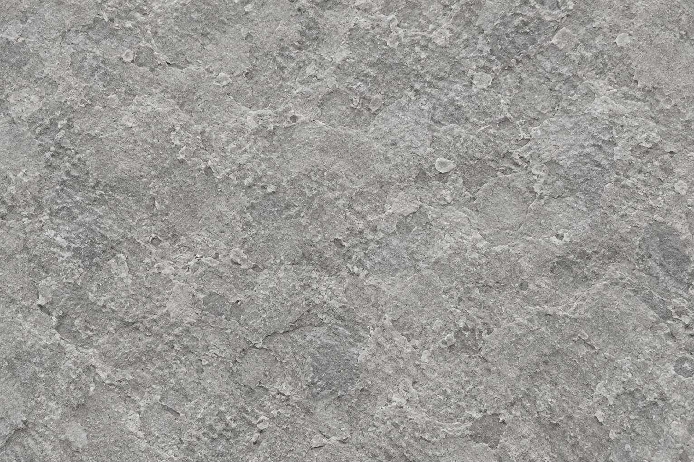
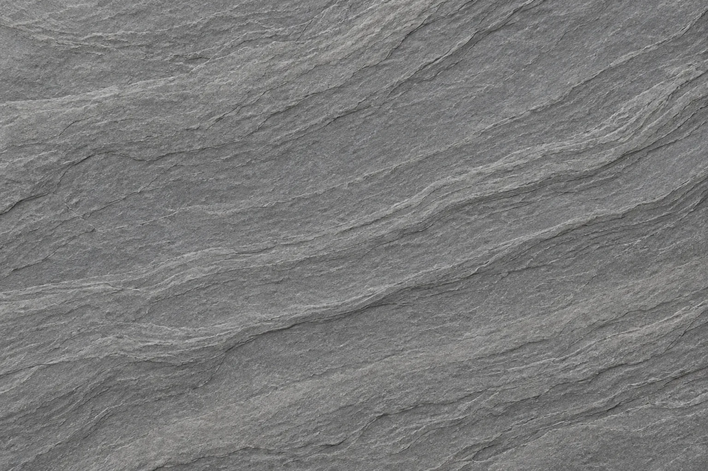
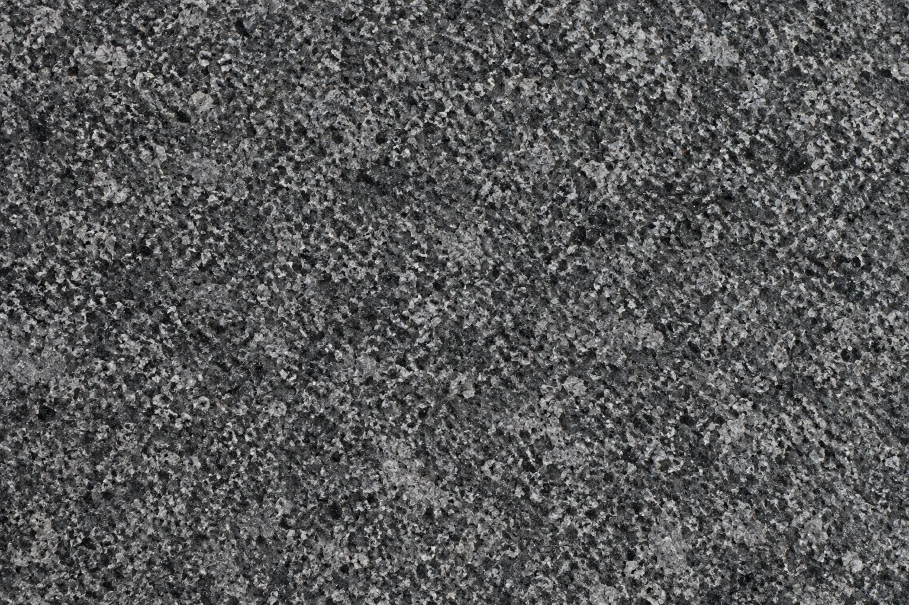

Listing Texture Library
Three grayscale backgrounds for listings without a usable surface photograph. These are generated decorative swatches; they do not depict a particular relic. On listing pages they appear darker, with reduced opacity and focal blur.


